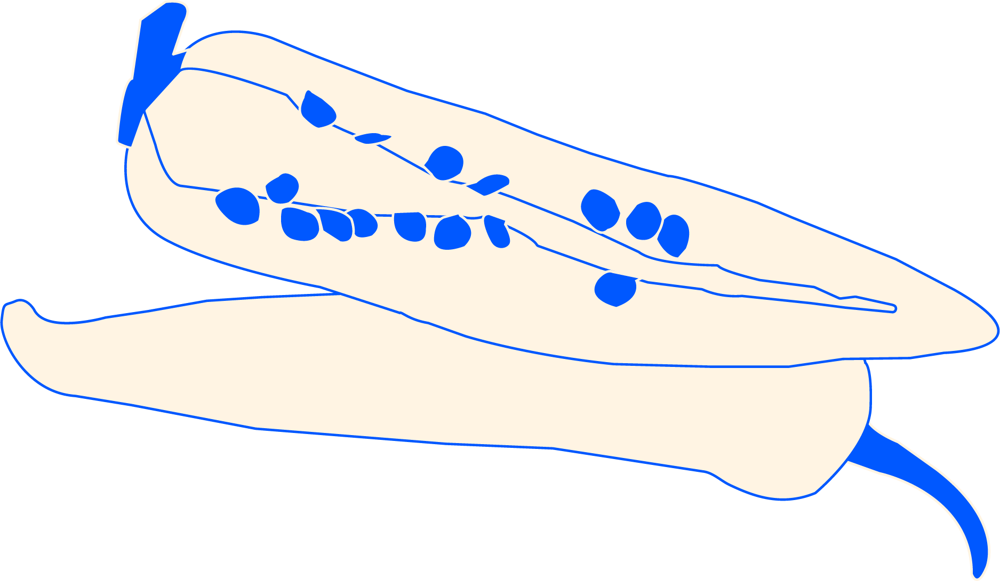
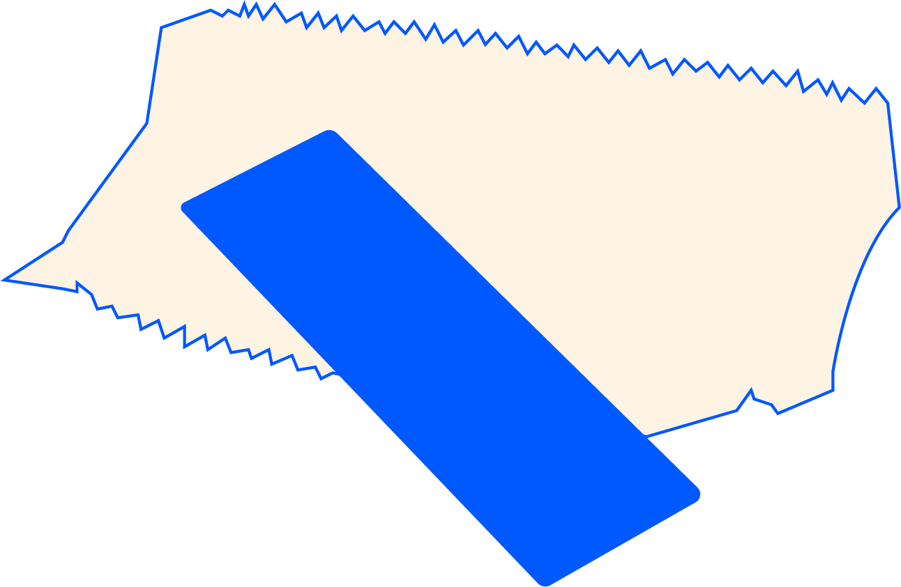
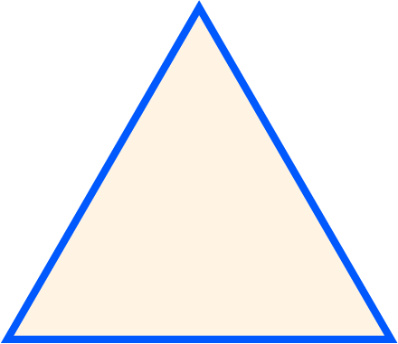
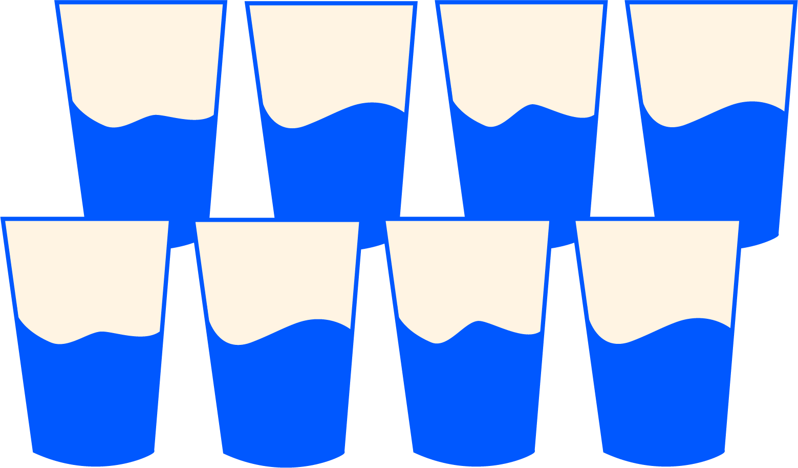

that you might have not known about.
1. Children have not been killed or seriously injured by poisoned candy or fruit given to them by strangers at Halloween or any other time, though there are cases where people have poisoned their own children.
2. Turkey meat is not particularly high in tryptophan, and does not cause more drowsiness than other foods.
3. Seeds are not the spicy part of chili peppers.
4. Waking sleepwalkers does not harm them.
5. Eating less than an hour before swimming does not increase the risk of experiencing muscle cramps or drowning.
6. Drinking coffee and other caffeinated beverages does not cause dehydration for regular drinkers, although it can for occasional drinkers.
7. Swallowed chewing gum does not take seven years to digest.
8. The Bermuda Triangle does not have any more shipwrecks or mysterious disappearances than most other waterways.
9. Most food is edible long after its expiration date, with the exception of some perishables.
10. Sign languages are not the same worldwide.
11. Ancient Greek and Roman sculptures were originally painted bright colors.
12. The common image of Santa Claus as a jolly old man in red robes was not created by The Coca-Cola Company as an advertising gimmick.
13. Bulls are not enraged by the color red, used in capes by professional matadors.
14. Dogs do not age consistently seven times as quickly as humans.
15. Sunflowers do not always point to the sun.
16. Private browsing, such as incognito mode, does not protect users from being tracked by websites or their internet service provider.
17. Global warming is not caused by the hole in the ozone layer.
18. Shaving does not cause terminal hair to grow back thicker (more dense) or darker.
19. Drinking eight glasses (2–3 liters) of water a day is not needed to maintain health.
20. The common cold is caused by germs, not cold temperature.